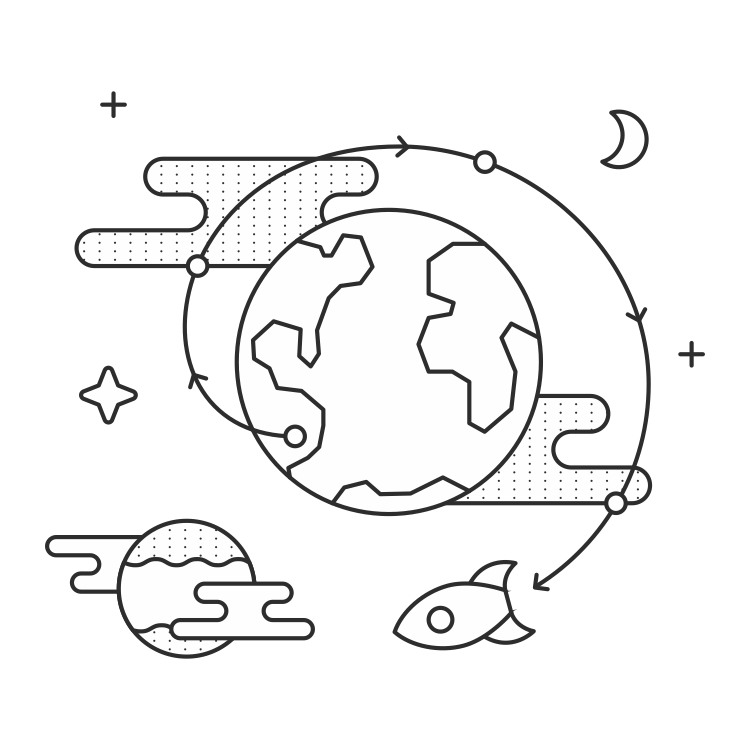

视图和路由的高级模式

视图装饰器
Python装饰器是用来改变其他函数的函数。当装饰函数被调用，这个装饰器被调用替代。然后装饰器能够才去行动，修改参数，停止执行或者调用原函数。我们能使用装饰器来包装视图来运行他们执行前的代码。
1 |
|
如果你浏览过Flask的教程，你可能很熟悉这个代码块中的语法。`@app.route`Flask应用中是用来匹配URL到视图函数的装饰器。
来看一些其他你能够在你的Flask应用中使用的装饰器。
认证
Flask-Login扩展使可以很容易的实现一个登录系统。出了处理用户认证的细节，Flask-Login给了我们一个装饰器用来限制某些视图给已经认证的用户：@login_required。
1 | # app.py |
警告
@app.route应该永远是最远的视图装饰器。
只有被认证的用户将能够访问/dashboard路由。我们能配置Flask-Login让没有认证的用户跳转到登录页面，返回一个HTTP 401状态或者任何其他我们希望他们做的。
注意
在官方文档阅读更多关于Flask-Login的使用。
缓存
想象一篇提及到我们应用的文章刚刚发表在CNN和其他新闻站点。我们每秒钟获得成千上万的请求。我们的主页为每个请求前往数据库多次，所以这一切注意力都放慢下来到爬行。我们如何让速度快速加快，因此所有这些访问者就不会错过我们的站点。
这里有很多好的回答，但是这个部分是关于缓存的，所以我们将要谈谈关于缓存的东西。明确来说，我们将要使用Flask-Cache扩展。这个扩展提供给我们一个装饰器，我们可以用在我们的主页视图上用来在一段时间内缓存响应。
Flask-Cache 能够被配置和很多不同的缓存后端一起工作。一个流行的选择是Redis，这个我们可以简答设置和使用。假定Flask-Cache已经被配置完成，这段代码块展示我们的装饰器视图是什么样子的。
1 | # app.py |
现在这个函数将会每60秒只运行一次，这时候缓存过期。这个响应将会被保存在我们的缓存中并且为任何有障碍的请求从这里获取响应。
注意
Flask-Cache 也让我们memoize函数或者缓存用确定参数调用的函数的结果。我们甚至能够缓存计算昂贵的Jinja2模板片段。
自定义装饰器
在这部分，让我们想象我们有一个应用来让我们的用户每个月付费，如果一个用户的账户到期了，我们将会跳转他们到结账页面并且告诉他们去升级。
1 | # myapp/util.py |
| 行数 | 注释 |
|---|---|
| 10 | 当一个函数被@check_expried装饰，check_expried()被调用并且被装饰的函数被作为参数传递。 |
| 11 | @warps是一个装饰器用来做一些簿记，使被装饰的函数()显示为func()的文档和调试的目的。这使这个函数的行为更正常一点。 |
| 12 | 。。。 |
| 16 | 。。。 |
当我们把装饰器叠在一起时，最上边的装饰器将会第一个运行，然后调用下一行的函数：视图函数或者下一个装饰器之一。装饰器语法只是一点点语法糖。
1 | # This code: |
这个代码块使用我们自定义装饰器和来自Flask-Login扩展的@login_required装饰器展示一个例子。我们能使用多个装饰器通过把他们叠在一起。
1 | # myapp/views.py |
现在当一个用户尝试访问 /user_app，check_expired()将会在运行这个视图函数前确定他们的账户没有过期。
注意
在Python docs了解更多关于warps()函数的作用。
URL转换器
内置转换器
当你在Flask里定义一个路由，你能够指定它的一部分转换成Python变量并且传递给视图函数。
1 | @app.route('/user/<username>') |
无论。。URL标签<username>将会被传递到视图作为username参数。你也能够指定一个转换器在变量被传到视图前过滤它。
1 | @app.route('/user/id/<int:user_id>') |
在这个代码块，这个URL http://myapp.com/user/id/Q29kZUxlc3NvbiEh 将会返回404代码-未找到。这是因为这个URL的部分被支持变成整型实际上是一个字符串。
我们还可以有第二个视图来查找字符串。这会被/user/id/Q29kZUxlc3NvbiEh/调用，与此同时第一个会被/user/id/124调用。
这个表展示Flask的内置URL转换器。
| 名称 | 描述 |
|---|---|
| string | 。。。 |
| int | 。。。 |
| float | 。。。 |
| path | 。。。 |
自定义转换器
我们同样可以自定义转换器来满足我们度需要。在Reddit上（一个流行的连接分享站点），用户创建和主持主题讨论型社区和链接分享。一些例子是/r/python和/r/flask，被表示为URL的路径：分别是reddit.com/r/python和reddit.com/r/flask。一个Reddit有意思的功能是你能够观看来自多个子reddits的文章通过加号作为连接多个名字，例如reddit.com/r/python+flask。
我们可以在我们自己的Flask应用中使用自定义转换器实线这个功能。